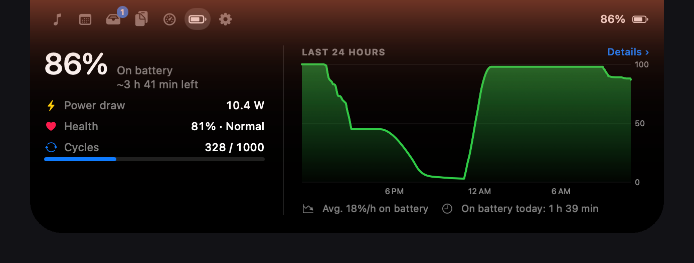

Your notch has a job now.
DynIsl turns the black notch on your MacBook into a live island: the song that's playing, your next meeting, battery and AirPods, Claude limits, downloads and more. Plus a full system dashboard. Free, open source, native Swift.
It lives where the notch is.
Hover or click the notch to open it. It grows only as much as it needs and goes back when you leave.

- MusicSpotify and Apple Music with artwork, controls and a glow in the cover's color.
- MeetingsA countdown before calendar events and a join button for Zoom, Meet and Teams.
- Battery and AirPodsCharging, health, 24-hour history and AirPods battery when they connect.
- AI usageYour Claude 5-hour and weekly limits, when they reset, and Claude Code tokens.
- ShelfDrop files on the island, AirDrop them, or convert images and PDFs on the spot.
- Keep awakeKeep the Mac awake for a while, until a time, while an app runs, even with the lid closed.
- Volume and brightnessFive HUD styles that replace the system one.
- Clipboard historyRecent copies, kept on your Mac and cleared when the screen locks.
And a dashboard for the rest.
Processor, graphics, memory, storage, network, battery, displays and Bluetooth in one window. Tidy the desktop by type and month, clean old downloads, run a speed test.

Install in a minute.
- Download the DMGSigned with a Developer ID and notarized by Apple.
- Drag DynIsl to ApplicationsThen open it from Applications or Launchpad.
- Pick what it can showEvery permission is optional. Skip one and only that feature stays off.
Stays on your Mac.
No accounts, no analytics. DynIsl only goes online for weather, Spotify artwork, a daily update check and speed tests you start. The island is hidden from screen sharing by default.